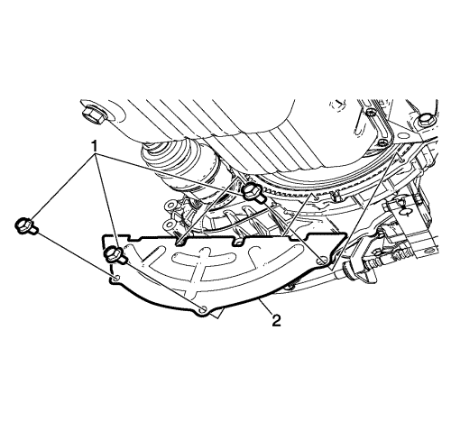
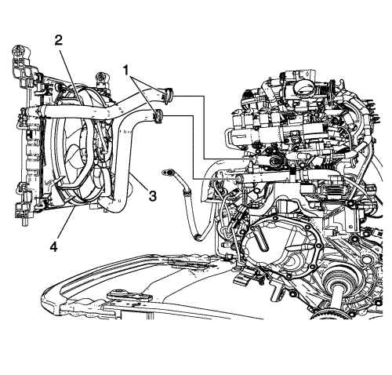
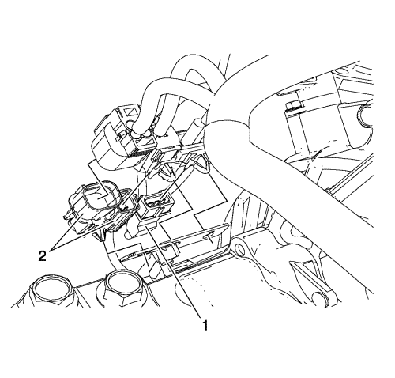
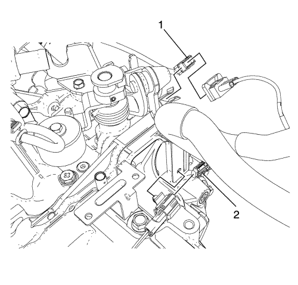
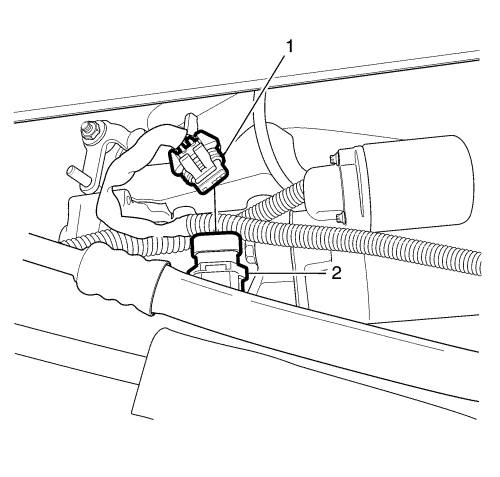
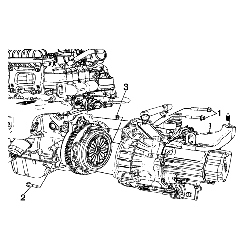

Spark
Sustitución de la caja de cambios
Procedimiento de desmontaje
Elevar el vehículo y soportarlo de manera segura. Consultar
Elevación del vehículo con un gato
.
Vacíe el aceite del cambio. Consultar
Sustitución del aceite del cambio
.

Desmonte el perno del plato inferior de la carcasa del embrague (1) y el plato inferior de la carcasa del embrague (2).
Separe el semieje de la rueda delantera del cubo de rueda. Consultar
Sustitución del semieje de la rueda delantera
.
Tras retirar las piezas relacionadas para extraer el conjunto del tren motriz, desmonte el conjunto del tren motriz del vehículo. Consultar
Sustitución del motor
:
con CH-49289 y CH-49290
→
con EN-49802 y EN-50176
.
Desconecte el compresor del aire acondicionado y el tubo flexible del condensador del condensador de aire acondicionado. Consultar
Sustitución del tubo flexible del compresor y condensador de aire acondicionado
.

Afloje la abrazadera del tubo flexible de entrada y salida del radiador (1).
Desconecte los tubos de entrada y salida del radiador (2, 3) y desmonte el conjunto del condensador y el radiador (4).

Desenchufe el conector del sensor de posición del cigüeñal (1) y los conectores del sensor de oxígeno (2).
Suelte los conectores del soporte de conectores.
Retire el sensor de posición del cigüeñal. Consultar
Sustitución del sensor de posición del cigüeñal
.

Desenchufe el conector del sensor de detonación (1).
Desemborne el conector eléctrico (2) del interruptor de la luz de marcha atrás.
Suelte el mazo de cables del motor del soporte.

Separe el conector eléctrico (1) del engranaje accionado del velocímetro (2).
Separe el mazo de cables de la caja de cambios.
Desmonte el soporte de montaje trasero de la caja de cambios. Consultar
Sustitución del apoyo del soporte de montaje trasero de la caja de cambios
.
Desmonte el semieje de la rueda delantera de la caja de cambios. Consulte
Sustitución del semieje de la rueda delantera
.
Desmonte el motor de arranque. Consultar
Sustitución del motor de arranque
.

Extraiga los tornillos superiores del cambio (1).
Extraiga el tornillo inferior del cambio (2).
Extraiga la tuerca del cambio (3).
Separe la caja de cambios del motor.
Procedimiento de montaje
Monte la caja de cambios en el motor.
Atención:
Consulte
Atención - fijaciones
en la sección Prólogo
Monte la tuerca inferior del cambio de marcha (3) y apriétela hasta
61 N·m (44 lib. pie)
.
Monte el tornillo del soporte del cambio de marcha (2) y apriételos hasta
61 N·m (44 lib. pie)
.
Monte los tornillos superiores del soporte del cambio de marcha (1) y apriételos hasta
61 N·m (44 lib. pie)
.
Instale el motor de arranque. Consultar
Sustitución del motor de arranque
.
Monte el semieje de la rueda delantera a la caja de cambios. Consultar
Sustitución del semieje de la rueda delantera
.
Monte el soporte de montaje trasero de la caja de cambios. Consultar
Sustitución del apoyo del soporte de montaje trasero de la caja de cambios
.
Coloque el mazo de cables a la caja de cambios.
Acople el conector eléctrico (1) al engranaje impulsado del velocímetro (2).
Enganche el mazo de cables del motor en el soporte.
Emborne el conector eléctrico (2) al interruptor de la luz de marcha atrás.
Enchufe el conector del sensor de detonación (1).
Instale el sensor de posición del cigüeñal. Consultar
Sustitución del sensor de posición del cigüeñal
.
Enganche los conectores al soporte de conectores.
Enchufe el conector del sensor de posición del cigüeñal (1) y los conectores del sensor de oxígeno (2).
Monte el conjunto del condensador y el condensador (4) y conecte los tubos flexibles de entrada y salida del radiador (2, 3).
Monte la abrazadera del tubo flexible de salida del radiador (1).
Conecte el compresor del aire acondicionado y el tubo flexible del condensador al condensador de aire acondicionado. Consultar
Sustitución del tubo flexible del compresor y condensador de aire acondicionado
.
Monte el conjunto del tren motriz en el vehículo y después monte las piezas relacionadas. Consultar
Sustitución del motor
:
con CH-49289 y CH-49290
→
con EN-49802 y EN-50176
.
Monte el semieje de la rueda delantera en el cubo de rueda. Consultar
Sustitución del semieje de la rueda delantera
.
Monte el plato inferior de la carcasa del embrague (2) y sus pernos (1) y apriételos a
10 N·m (89 lib. pulg.)
.
Llene la caja de cambios con aceite. Consultar
Sustitución del aceite del cambio
.
Ajuste el cable del embrague. Consultar
Ajuste del conjunto de embrague
.
© Copyright Chevrolet Europe. All rights reserved